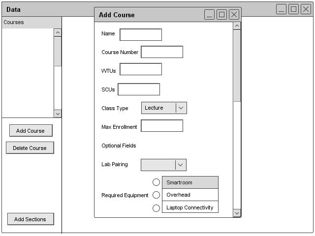
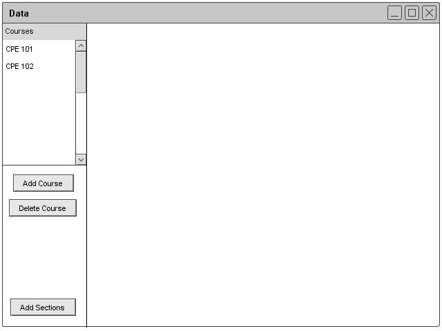
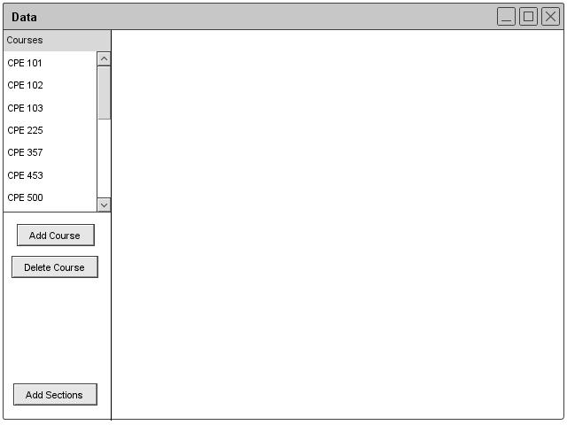
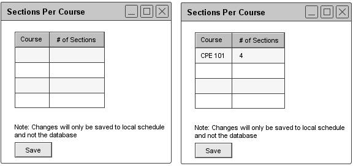

2.3.2.1 Adding Course Information
The administrator adds a course by clicking the add button under the course section of the Schedule header. After clicking the button, the database window appears with an empty form for adding a course. Figure 21 shows the form. The form contains fields for the course name, course number, SCUs (Student Credit Units), WTUs (Work Time Units), class type (lecture or lab), max enrollment, lab pairing, and required equipment. The lab pairing and required equipment fields are optional.After completing the form, the administrator clicks save and the information saves in the permanent database.

Figure 21: Course Add Dialogue
Figure 22 illustrates a filled course field.

Figure 22: Filled Course Add Dialogue
Figures 23 and 24 show what the database looks like with two courses and multiple courses.

Figure 23: Course Database

Figure 24: Filled Course Database
2.3.2.1.1 Sections per Course
The administrator can add the number of sections by clicking the Add Sections button. After clicking the button, the Scheduler displays a two-column form with all of the courses listed on the left side. The administrator can add the number of sections in the box next to the corresponding course. After adding, the administrator can click save. Figure 25 illustrates the sections form.

Figure 25: Course Sections Dialogue
prev: data-course |
next: course-edit |
up: functional |
index: index